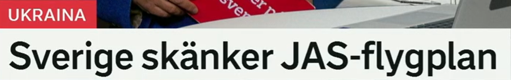
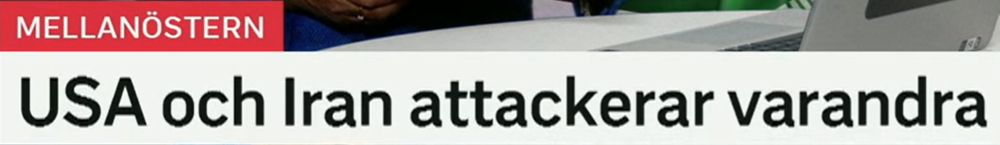
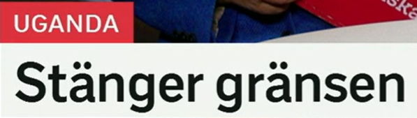
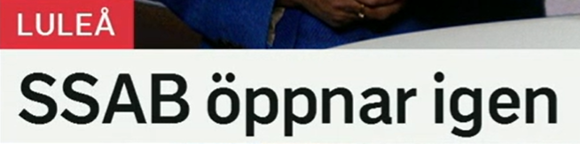
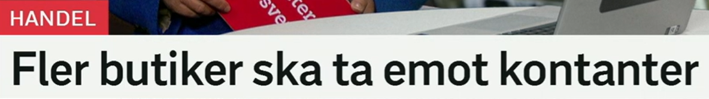

Sverige skänker JAS-flygplan
瑞典捐赠 JAS 战斗机。
原形 skänka，表示捐赠、赠送。常用于国家援助、慈善、物资捐赠。
近义词：donera 捐赠，ge bort 送出，bidra med 提供/贡献，överlämna 移交。
Sverige skänker medicinsk utrustning. 瑞典捐赠医疗设备。
ett flygplan 飞机；JAS-flygplan 指 JAS 战机。相关词：stridsflygplan 战斗机，försvar 国防，militärt stöd 军事援助。
高频搭配：skicka flygplan 派出飞机，leverera vapen 交付武器，ge militärt stöd 提供军事支持。
Landet behöver fler stridsflygplan. 该国需要更多战斗机。
国家名作主语时通常不加冠词。所有格是 Sveriges，如 Sveriges regering 瑞典政府。
Sveriges regering fattar beslut i dag. 瑞典政府今天作出决定。
援助新闻句型
A skänker B = A 捐赠 B。若强调接收方，可说：A skänker B till C.

USA och Iran attackerar varandra
美国和伊朗相互攻击。
原形 attackera，攻击、袭击，可用于军事、网络、政治言论等语境。
近义词：angripa 攻击/抨击，anfalla 进攻，slå till mot 突袭，beskjuta 炮击。
Rebellerna attackerar en militärbas. 叛军攻击一处军事基地。
varandra 表示“彼此、互相”。常见搭配：hjälpa varandra 互相帮助，anklaga varandra 互相指责，möta varandra 彼此见面/交手。
Länderna anklagar varandra för attacken. 两国互相指责对方发动袭击。
中东。相关词：konflikt 冲突，fredssamtal 和谈，vapenvila 停火，spänningar 紧张局势。
Spänningarna ökar i Mellanöstern. 中东紧张局势加剧。
相互动作
A och B + 动词 + varandra = A 和 B 互相做某事。这个结构可以替换很多动词：kritiserar varandra、stödjer varandra。

Stänger gränsen
关闭边境。
原形 stänga，关闭。可用于门、学校、商店、边境、网站、服务。
近义词：sluta 停止/结束，lägga ner 关闭/停办，spärra av 封锁，stänga av 关掉/封闭。
Myndigheterna stänger skolorna. 当局关闭学校。
来自 en gräns，边界、边境、界限。相关词：gränskontroll 边境检查，gränsövergång 过境点，gränsvakt 边防人员。
近义表达：landgräns 陆地边境，territoriell gräns 领土边界，en gräns för något 某事的界限。
Gränsen öppnas igen nästa vecka. 边境下周重新开放。
省略主语
Stänger gränsen 省略了主语，完整可写：Uganda stänger gränsen. 标题常靠栏目标签补主语。

SSAB öppnar igen
SSAB 重新开放/复工。
原形 öppna，打开、开放、开业。反义词是 stänga。
近义词：starta igen 重新启动，återuppta 恢复，slå upp portarna 开门营业，komma igång 开始运转。
Fabriken öppnar efter branden. 工厂在火灾后重新开放。
表示“再次、重新”。常见搭配：börja igen 重新开始，öppna igen 重新开放，komma tillbaka igen 再回来。
Tågen går igen efter stoppet. 停运后火车又开始运行。
公司名作主语时常直接接动词。工业相关词：stålverk 钢厂，fabrik 工厂，produktion 生产，anställda 员工。
Produktionen startar igen på fabriken. 工厂生产重新启动。
恢复运行
X öppnar igen = X 重新开放/恢复运营。用于学校、商店、工厂、道路都可以。

Fler butiker ska ta emot kontanter
更多商店将接受现金。
fler 表示“更多的”，用于可数名词。对比 mer，常用于不可数或抽象量。
近义表达：ett större antal 更多数量，allt fler 越来越多，flera 若干/多个。
Allt fler kunder betalar med kort. 越来越多顾客用卡付款。
en butik 商店。近义词 affär 更口语。相关词：kund 顾客，kassa 收银台，handel 商业。
Butikerna har öppet längre i sommar. 商店今年夏天营业时间更长。
ta emot 接受、接收、接待。ska 表示将会/应当。常见搭配：ta emot betalning 接受付款，ta emot hjälp 接受帮助，ta emot gäster 接待客人。
近义词：acceptera 接受，motta 接收，välkomna 欢迎/接纳。
Sjukhuset tar emot fler patienter. 医院接收更多病人。
kontanter 现金，通常用复数。相关词：kortbetalning 刷卡付款，digital betalning 数字支付，betalmedel 支付手段。
Många unga använder sällan kontanter. 许多年轻人很少使用现金。
支付场景句型
ta emot kontanter = 接受现金。否定可说：Butiken tar inte emot kontanter.
复习表：重点词 + 近义词 + 高频搭配
| 关键词 | 近义/相关词 | 高频搭配 |
|---|---|---|
| skänka | donera, ge bort, bidra med, överlämna | skänka pengar, skänka vapen, ge stöd till |
| attackera | angripa, anfalla, slå till mot, beskjuta | attackera varandra, attackera en bas, angripa ett mål |
| stänga | stänga av, spärra av, lägga ner, sluta | stänga gränsen, stänga skolor, stänga butiken |
| öppna | starta igen, återuppta, komma igång | öppna igen, öppna fabriken, öppna gränsen |
| ta emot | acceptera, motta, välkomna | ta emot kontanter, ta emot hjälp, ta emot patienter |
| kontanter | cash, betalmedel, pengar, sedlar och mynt | betala med kontanter, använda kontanter, kontant betalning |
练习 1
把“瑞典捐赠医疗设备”译成瑞典语。提示：Sverige skänker medicinsk utrustning.
练习 2
用 varandra 写“两国互相指责”。提示：Länderna anklagar varandra.
练习 3
把“边境重新开放”译成瑞典语。提示：Gränsen öppnar igen.
练习 4
说“这家商店不接受现金”。提示：Butiken tar inte emot kontanter.